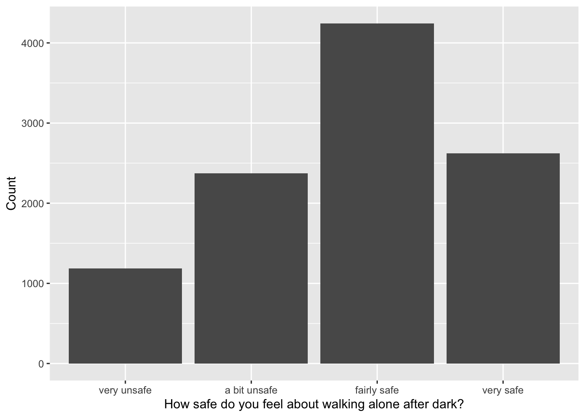
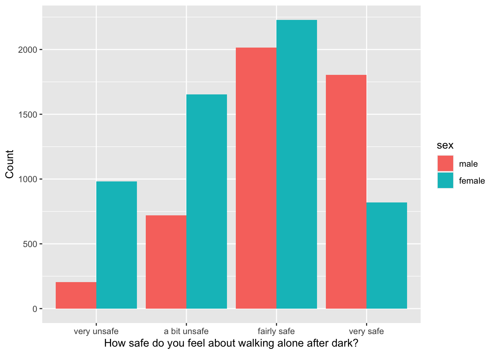
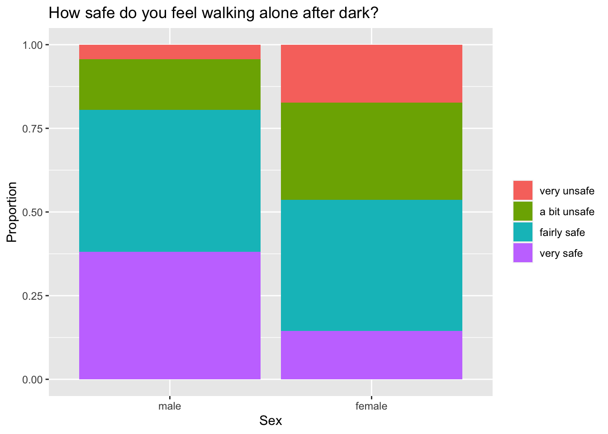

Chapter 2 Part 1 - Exploring crime data
Here, you will look at crime data from the British Crime Survey (2007-2008). In practice, such data might be helpful to identify groups in the population who are particularly vulnerable to crime or draw inferences for city planners to find ways of making citizens feel safer. Formal hypothesis tests for differences in proportions for different groups will be introduced later in the semester. Still, here, you will get an idea of how to formulate hypotheses in the first place.
To get started, save the data in the same folder as the R file you use to work on this lab (in RStudio), then set your working directory to that folder and load the data:
#set working directory to source file location
#load the RDS file:
crimedata <- readRDS("crimedata.rds")Get an impression of the dataset by looking at the first 6 rows. Recall that you can do that by calling the function head():
Most variables in the dataset should be easily interpretable, but here is a brief explanation for some of the less intuitive ones:
• deprivation quintile : Index of multiple deprivation by quintile in England (1=20% most deprived wards)
• walkdark : Answer to the question "How safe do you feel walking alone after dark?".
• wburgl : Answer to the question "How worried are you about having your home broken into?".
• wmugged : Answer to the question "How worried are you about being mugged and robbed?".
• victim : Indicates whether or not someone was a victim of crime in the last 12 months.
Take a closer look at the crime dataset, then answer the following questions...
What type of variable is age?
Here, age is recorded in full years.
What type of variable is ethnicity?
There are different groups of ethnicities and it is not plausible to put them in a particular ranking.
What type of variable is years_in_area?
There are different groups, and they can be ranked (for example, someone who lived in an area "10 years but less than 20 years" has lived there longer than someone who has lived there "2 years but less than 3 years").
What type of variable is sex?
There are two sexes (female, male) and it is not plausible to put them in a particular ranking.
What type of variable is walkdark?
There are different groups and they can be ranked. For example, someone who feels "very unsafe" walking alone after dark feels less safe than someone who feels "a bit unsafe".
The data contain 10,427 observations, which are responses from individuals to 11 questions. Since the dataset is fairly large, you can create plots to get an impression of the data and then compute frequencies as a best guess to the true population proportions for a first informal check of possible associations between variables.
2.1 Plotting the data
You might be interested in how safe people feel walking alone after dark. You can create a barplot for that variable by writing the code below:
ggplot(data=crimedata,aes(walkdark)) +
geom_bar() +
xlab("How safe do you feel about walking alone after dark?") +
ylab("Count")
A lot of people seem to feel at least fairly safe when walking alone after dark, but how does that response look like for different groups of people? Below is an example showing you how to separate the responses by sex:
ggplot(data=crimedata,aes(walkdark,fill=sex)) +
geom_bar(position="dodge") +
xlab("How safe do you feel about walking alone after dark?") +
ylab("Count")
Note that in the code above, the function geom_bar() creates a barplot and the argument position="dodge" specifies that the bars are supposed to appear side-by-side. Choosing position="fill" would give you a stacked barplot instead.
How do you interpret the barplot of responses to walking alone after dark, by females and males?
Note that the plot shows the counts for each sex side-by-side. Since the number of female and male respondents might not be the same, it would be useful to know how many of each sex responded to the survey. You can find out via the function table(), as presented below:
##
## male female
## 4743 5684The survey contains quite a few more responses from females than males. Hence, we might want to see how the response to walkdark is split within the males and females.
To do so we use the following plot:
ggplot(data=crimedata,aes(sex,fill=walkdark)) +
geom_bar(position="fill") +
xlab("Sex") +
ylab("Proportion") +
ggtitle("How safe do you feel walking alone after dark?") +
labs(fill='')
The argument
position = "fill"gives you a stacked barplotThe line labs
labs(fill='')remove the name of the variablewalkdarkfrom the legend.
Now, you can repeat the steps above for the variables deprivation_quintile and years_in_area, then answer the questions below.
How would you describe a possible relationship between the deprivation quantiles and how safe people feel walking alone after dark?
How would you describe a possible relationship between the number of years people have lived in an area and how safe they feel walking alone after dark?
Hopefully, this part of the lab gave you some good ideas how to use plots to gain insights for a given dataset. If you want, you can explore the crime data further by checking possible associations between other variables in the data.